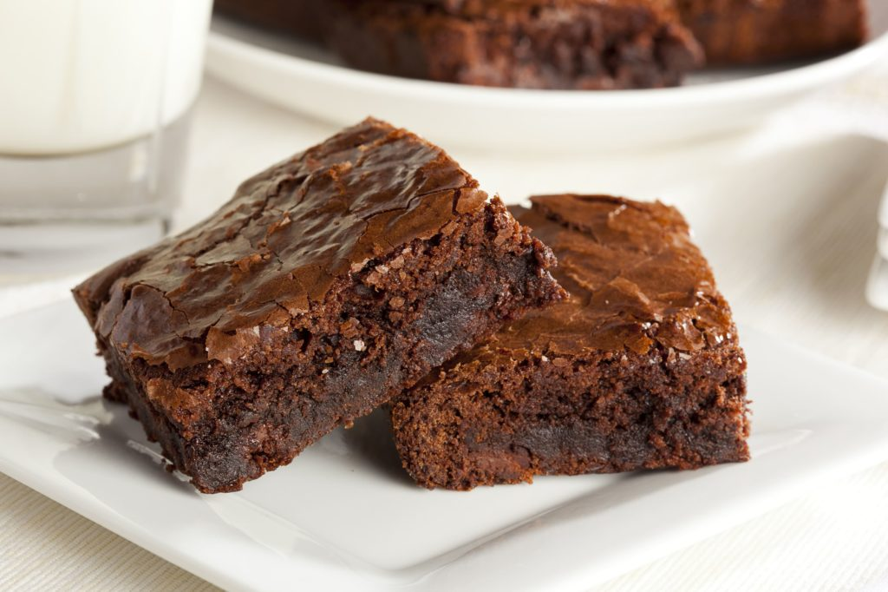

Sobre a Receita

Figura 1: Brownie denso com casquinha craquelada por cima.
Intensidade do chocolate: 95%
Tempo de forno: (30 min)
Ingredientes
- 200g de chocolate meio amargo derretido
- 3 colheres de sopa (c.s.) de manteiga
- 1 xícara de açúcar refinado
- 1/2 xícara de açúcar mascavo
- 3 ovos inteiros
- 1 xícara de farinha de trigo
- 2 colheres de sopa (c.s.) de cacau em pó 50%
- 1 pitada de sal
Modo de Preparo
Clique aqui para ver o passo a passo do Brownie
- Derreta o chocolate meio amargo junto com a manteiga no banho-maria ou micro-ondas.
- Em uma tigela, bata bem os ovos com o açúcar refinado e o açúcar mascavo até formar um creme
claro.
- Adicione a mistura de chocolate derretido ao creme de ovos e misture bem.
- Peneire a farinha de trigo, o cacau em pó e a pitada de sal sobre a massa, incorporando
delicadamente com uma espátula.
- Despeje a massa em uma forma untada e forrada com papel manteiga.
- Asse em forno pré-aquecido a 180°C por cerca de 25 a 30 minutos.
- Espere esfriar completamente antes de cortar em quadrados.